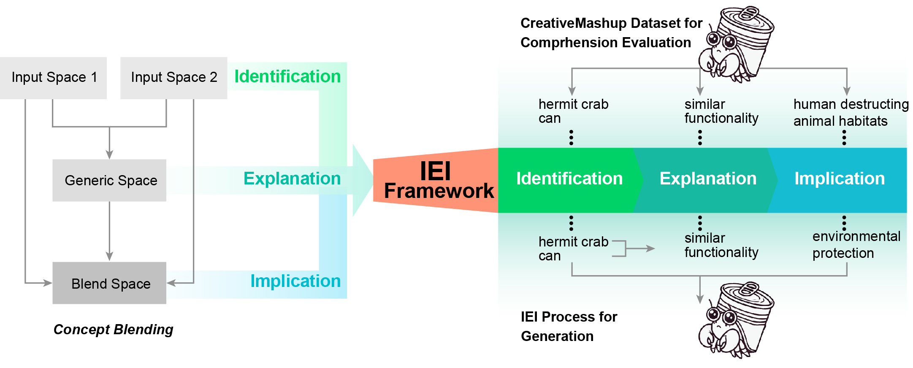
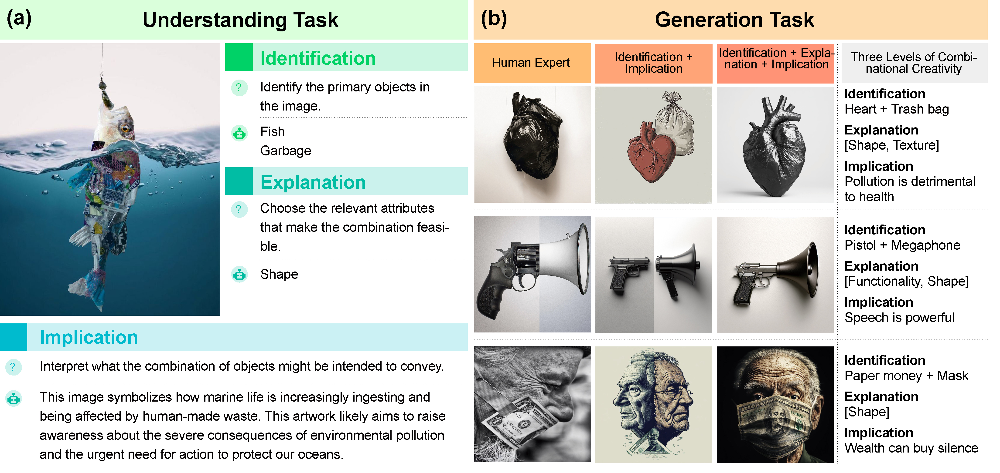

These figures show qualitative results for generation. The first rows represent the results in the IEI setting. The second rows represent the results in the II setting. Each column represents results of a text-to-image model (i.e., Midjourney, Flux-1.1-pro, DALLE-3, Flux-1.0-dev, Stable-diffusion-3-medium). These results show that the IEI method can work across different themes and various concepts and enhance the quality of combination compared to the II setting.
Abstract
The ability to combine existing concepts into novel ideas stands as a fundamental hallmark of human intelligence. Recent advances in Vision-Language Models (VLMs) like GPT-4V and DALLE-3 have sparked debate about whether their outputs reflect combinational creativity--defined by M. A. Boden (1998) as synthesizing novel ideas through combining existing concepts--or sophisticated pattern matching of training data. Drawing inspiration from cognitive science, we investigate the combinational creativity of VLMs from the lens of concept blending. We propose the Identification-Explanation-Implication (IEI) framework, which decomposes creative processes into three levels: identifying input spaces, extracting shared attributes, and deriving novel semantic implications. To validate this framework, we curate CreativeMashup, a high-quality dataset of 666 artist-generated visual mashups annotated according to the IEI framework. Through extensive experiments, we demonstrate that in comprehension tasks, best VLMs have surpassed average human performance while falling short of expert-level understanding; in generation tasks, incorporating our IEI framework into the generation pipeline significantly enhances the creative quality of VLMs outputs. Our findings establish both a theoretical foundation for evaluating artificial creativity and practical guidelines for improving creative generation in VLMs.
Method Overview

The IEI framework systematically evaluates combinational creativity in comprehension and generation tasks. For comprehension, each level within the IEI framework represents progressively complex analytical capabilities, offering clear metrics to investigate comprehension capabilities. In generation tasks, the IEI framework guides the creative process systematically, facilitating more sophisticated and meaningful outputs compared to standard chain-of-thought approaches. This structured decomposition supports the design of experiments that explicitly integrate systematic creative thinking, enhancing VLMs' capacity for contextually relevant creation.
Task Setup

Examples of the comprehension task and generation task. (a) The understanding task demonstrates three evaluation components using a fish-garbage mashup image: human participants or VLMs identify primary objects, explain combination attributes, and interpret implications. (b) The generation task compares outputs from human experts and two model settings (Identification + Implication v.s. Identification + Explanation + Implication) across three concept pairs.